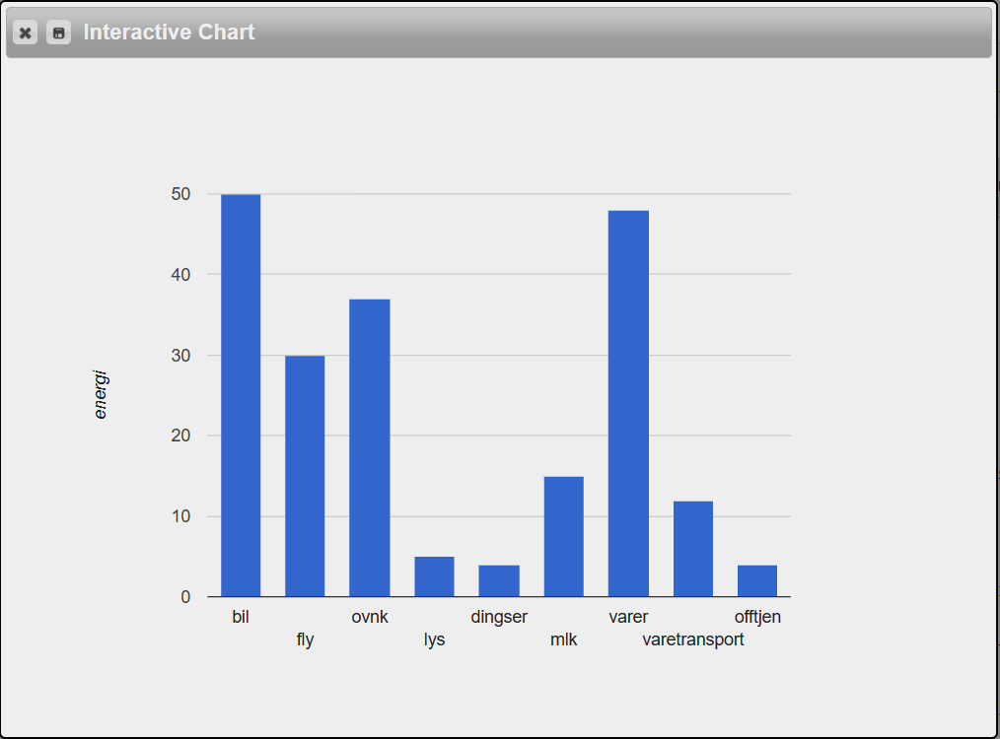

Denne oppgaven har vært veldig interessant, og jeg har lært mye nyttig om koding generelt :)
Jeg er 19 år gammel, og bor i Lillesand. På fritida mi liker jeg å bake, spille forskjellig sport, og strikke. Jeg vet fortsatt ikke hva jeg skal bli, men tenker å finne ut av det i løpet av studiet!
Hentet fra min GitHub repository for progoblig.
